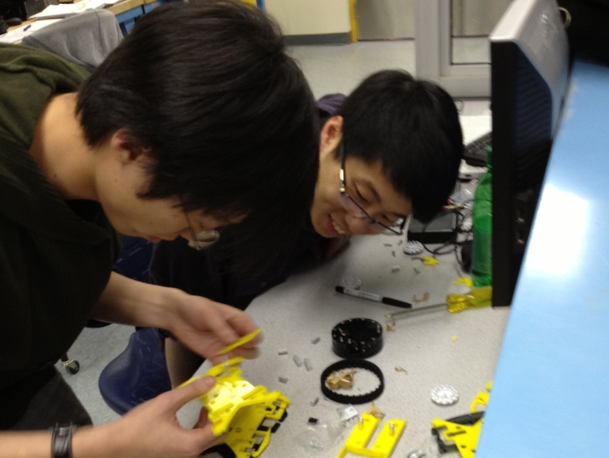
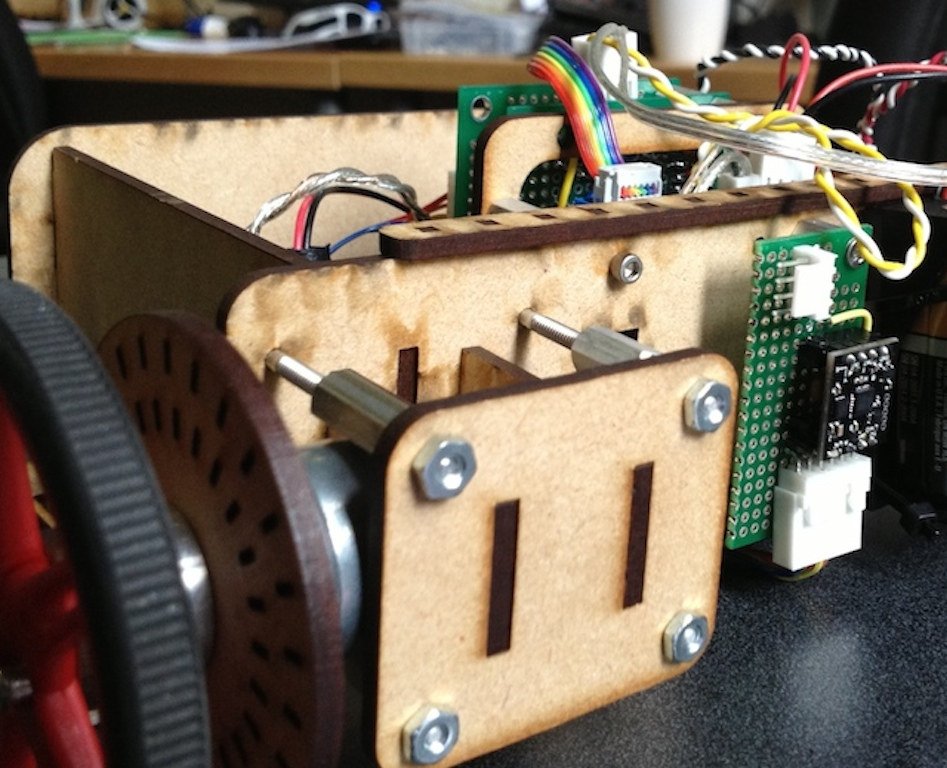
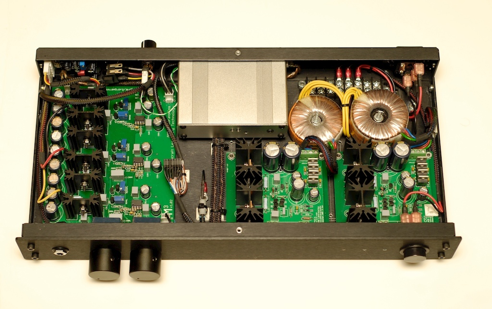

December 2013 - With Noam Eisen
In Computational Photography (CIS 581) at the University of Pennsylvania, I wrote some code for fully-automatic image stitching. The objective was to take in several images and 'stitch' them together, creating a result which appears natural to the eye. At the core was the implementation of methods of automatic feature detection and automatic feature matching. I implemented some of the methods presented in this article by Brown, Szeliski and Winder.
Shown above are three sample images which were taken with overlapping features.
After using the matched pairs of features in the images, affine transformations were used to convert the center and right images into the frame of the left image. Once transformed and overlayed, the edge regions become nearly unnoticeable, so further steps such as edge-smoothing were not necessary.
MATLAB was used throughout. The project files can be found on GitHub.
March 2013 - With Chao Qu.
The objective of this project was to design a classical controller to maintain a fixed following distance between two miniature lego trains. However, the controller was required to also handle a 0.1 second time-delay imposed on the system output of the following train. The lead train simply circled the track with fixed motor output, while the following train carried an ultrasonic distance sensor and an Arduino to measure distance and implement a control routine.
Initially, we setup a simple proportional derivative controller to observe the system. Without any modelling, or design effort it behaved like this:
We sought a controller with good tracking performance and good disturbance rejection, over a broad range of lead train speeds. This posed a particular challenge because running the lead train at different speeds strongly affects the type of disturbance that is ‘seen’ by the following train. The friction change when transitioning from the straight track to the curved track is the source of this disturbance. At high speeds, the lead train’s forward motion is high, and the step-change in track friction at this transition has little effect on it’s velocity. Therefore, the following train ‘sees’ little or no velocity disturbance.
However at low lead-train speeds, the friction at the transition to the corner has a prominent effect, and creates a step-like decrease in speed (and conversely, a step increase, as the lead train exits the corner shortly after). The magnitude of the step disturbance varies with the lead train speed. For the purposes of this report, we considered two cases although our controller can handle all the in-between operating conditions as well: We wanted to make a controller that could handle two extreme cases, plus all in-between cases.
CASE 1: fast lead train speed; insignificant velocity-step-disturbances at corner transitions.
CASE 2: slow lead train speed; significant velocity-step-disturbances at corner transitions.
The system was modelled in MATLAB Simulink, as shown in the diagram above. The following train transfer function was determined experimentally. The PID part of the controller was determined using the Zeigler-Nichols method. The feed-forward term for friction compensation was determined by trial and error.
The final controller is shown in use in the video below. Some integrator windup can still be observed, although it was limited. Disturbance rejection is greatly improved. Also, the steady state distance error amplitude is minimized, and oscillation amplitude is low.
The code can be found on GitHub.
February 2013 - June 2013 - With Ryan Wilson
As an aside to some of my past electronic hardware projects, I have workied with other mechatronics students to develop increasingly fast and practical PCB prototyping methods. Fast PCB prototyping is valuable because it permits many design iterations over a short period, sometimes several in one day. Here is a link to a wiki article that I co-authored, as a reference and as an instructional resource for other mechatronics students.
The method shown involves micro-milling of copper-clad boards using an LPKF S62. This permitted milling traces and drilling, but no solder mask placement. In addition, through-hole plating was acheived separately, using solder paste, a mask, and an oven. Our system permitted traces as small as 8 mil. Although two-sided boards with through hole plating could be made, even faster prototyping was possible with single-sided designs, using only surface mount components. This approach permitted very short milling times (as little as 1 hour) and forgoes the through-hole plating steps.
January 2013 - ongoing.
mStereo is a two-channel digital-to-analog (DAC) converter for audio. Is is a small part of an eventual comprehensive hardware solution for playback of digital audio files stored on computers, and mobile devices.
At present, the scope of the hardware has been limited to I2S-to-analog converter. I2S, introduced Philips, is a standard bus for inter-IC audio communication, with many practical benefits for hardware implementation, and ultimately, for user experience.
Since computer-based audio has become by far the most flexible and powerful way to store and play audio files, the task remains to develop hardware to accompany computers and provide the best possible user experience. Since I am so passionate about high-fidelity reproduction of audio recordings, developing my own high-performing hardware is rewarding on many fronts.
Practically, this means seeking the best possible hardware components (DAC ICs, oscillators, power supplies, etc.), integrating them, and ensuring their implementation permits their maximum specifications to be realized.
The hardware has gone through 3 iterations. Each was fabricated and tested using the rapid pcb prototyping methods outlined above. Parts were populated by hand, using solder paste, tweezers, and an oven. The fourth iteration will be fabricated and tested, and if satisfactory it will be sent out to a professional fab for production with silkscreen and solder mask.
At present, mStereo connects to two other peices of hardware. At the output, there is a high-speed, low-distortion, broadband stereo preamplifier (right). This is suitable for headphones or connecting to a larger stereo power amplifier for use with loudpeakers.
At the input there is a γ1, which uses a Burr-Brown PCM2707 to convert from a computer's USB output (PCM audio) to I2S, wich is passed to mStereo's input.
The next addition to mStereo will be the addition of an interface for converting PCM audio to I2S, so that mStereo will no longer rely on the γ1 to perform this conversion. This will support one of two common consumer hardware connections: either USB of S/PDIF.
Our hackathon project from the PennApps Spring 2013 Hackathon. Our project featured two remote controlled mobile robots that battle each other by shooting foam darts. Both are controlled over the web, and carry a mobile phone (running Android 4.3) on top, permitting the users to stream video wirelessly and visualize their robot's persepective using the tokbok OpenTok API. The code we put together during the hackathon can be found on GitHub.
In the final project of Mechatronic System Design (MEAM 510) groups of students built teams of three autonomous mobile robots to play hockey against one-another.
Our robots were conceptualized, mechanisms were prototyped, and the final hardware was assembled in a mere 4 weeks. In addition, code for autonomous gameplay was written from the ground-up, tested, and improved in parallel with the hardware development. Microcontrollers were used onboard each robot for receiving multiple sensor inputs and executing different plays according to a case structure.
Each robot was equipped with a small camera, harvested from inside a Nintendo Wii remote controller, and repurposed for localization. The camera was oriented toward the ceiling above the playing surface, where there was a cluster of LEDs in a fixed pattern. As the robots moved they used the detected change in position and orientation of the pattern on the ceiling to determine their own respective changes in position and orientation within the playing space. Team mate Jing is in the video above, testing the robot's ability to localize and go to a specific position.
Searching for the puck was accomplished by measuring light intensity values from a pair of phototransistors. Since the puck was constantly emitting infrared light, it's relative position could be approximated by measuring the phototransistors' voltages. The phototransistors' continuous voltage values were discretized by analog-to-digital converters, onboard the robot's microcontroller. The discretized quantities were compared in order to determine the robot's target orientation in the playing space.
The electronic hardware was standardized across the robots, with every component pin-compatible and swappable. This permitted very fast resolution of broken electronic hardware. The mechanical hardware, however was unique across each of the three robots. In addition, unique case-structures were used in each robot's programming, so that each robot could play a different 'role' in the miniature hockey tournament, in order to gain a strategic advantage over the competition.

In the fourth project of Mechatronic System Design (MEAM 510) our group built a two-wheeled balancing robot. The robot was designed to be battery powered, and able to hold both it's position and orientation (vertical) on both horizontal and inclined surfaces.
The robot used a MEMS accelerometer to measure it's angle of tile with respect to gravity. The accelerometer module passed it's output to an Atemel Atmega 32u4 microcontroller serially, using I2C. Using a feedback control routine on the microcontroller, and passing the output to two DC brushed motors, balancing was acheived. Oscillation was minimized, and in the video above it is nearly unnoticeable because of the carpet beneath the wheels.

In addition, we built our own optical quadrature encoders using IR LEDs and phototransistors. It's output gave a pair of square waves, out of phase by 1/3 period. The green and blue LEDs in the video above allowed us to visualize the encoder output. The encoders allowed us to determine both the rotation speed and direction of the wheels on the balancing robot, so that our feedback control loop could bring the robot to a stationary state.
Implemented both forward and inverse kinematic solutions control an industrial manipulator, using MATLAB. The code is on this GitHub repository. The end effector was removed and instead equipped with an RGB LED. The LED's intensity and color were varied as the end effector moved through a 2D plane in it's configuration space. The objective was to resolve some familiar image. The result is shown to the right.
Implemented both forward and inverse kinematic solutions control an industrial manipulator, using MATLAB. The code is on this GitHub repository. The end effector was removed and instead equipped with an RGB LED. The LED's intensity and color were varied as the end effector moved through a 2D plane in it's configuration space. The objective was to resolve some familiar image. The result is shown to the right.
January 2012 - ongoing.
Power amplifier project. My implementation of an M3, an high performance open-source stereo power amplifier for audio.
The M3 is accompanied by a linear regulated power supply. In addition, a DAC and accompanying power supply are housed in the same enclosure. This minimizes the path from the DAC's analog output to the high-impedance input of the power amplifier. In addition, rigorous sheilding is used to bring induced voltage noise to a minimum.
